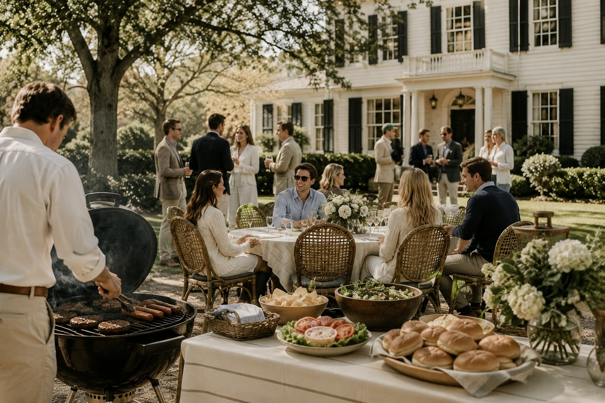

Our annual neighborhood cookout brings together family, friends, and neighbors for an afternoon of good food, community and conversation. This year will be an old-money theme, so wear your Sunday Best and be prepared to enjoy an elegant afternoon. Our menu will feature: Grilled Steak Bites, Garlic Mashed Potatoes, and Seasoned Aspargus.

"Attending the nieghborhood cookout was such a wonderful experience! The elegant atmosphere, delicious food, and classy lawn games made this feel like an afternoon at a country estate! I am already looking forward to the next one!"Return to the Jamestown Oaks Community Guide Home Page.
10/18/25 - Margaret H. Jamestown Oaks Resident